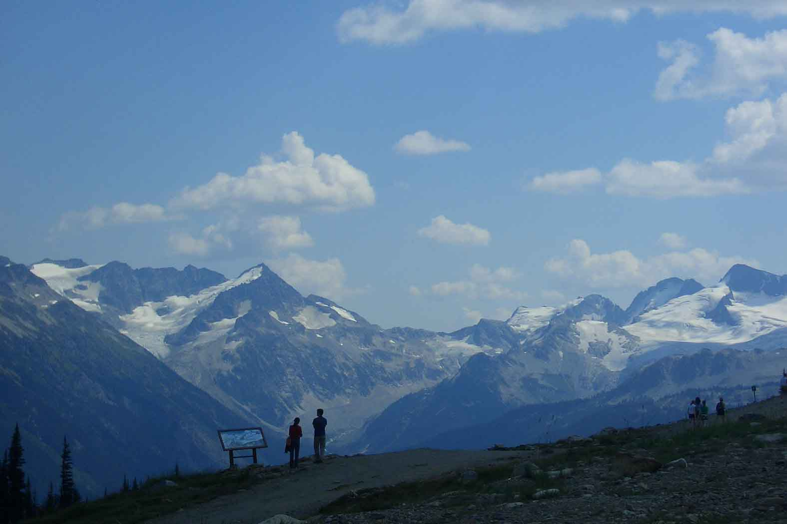
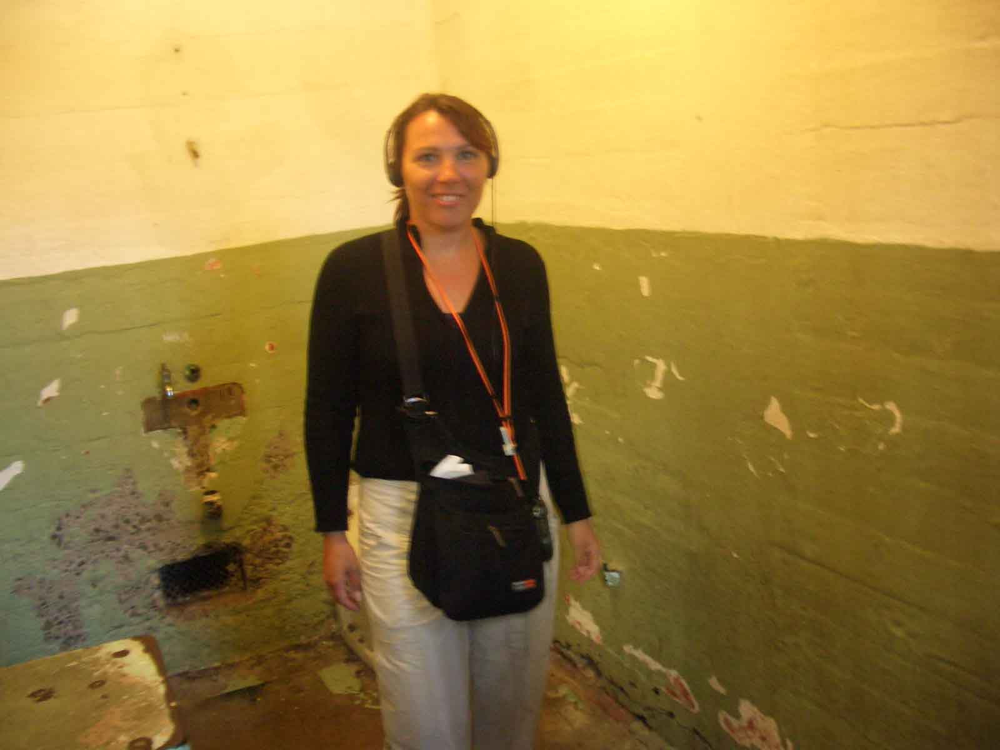
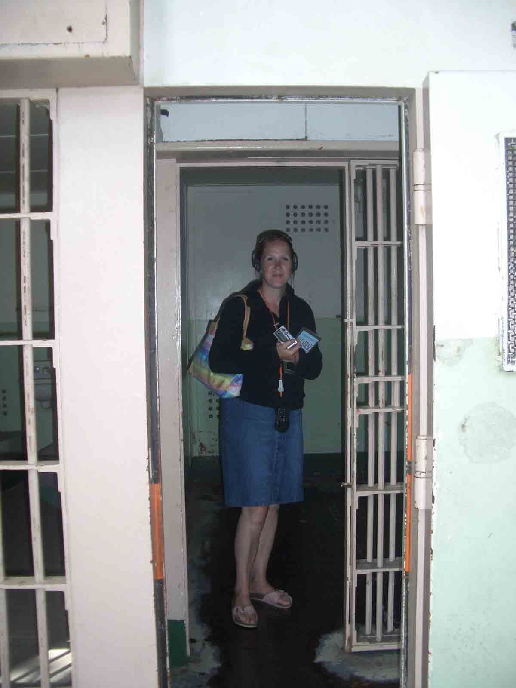
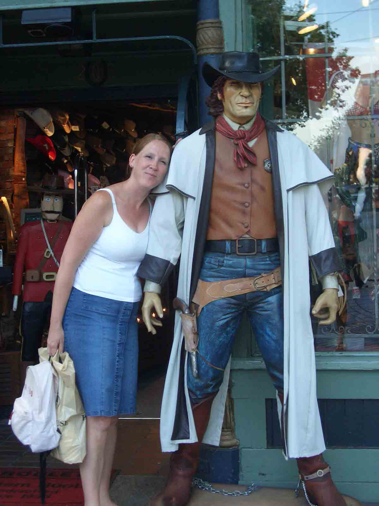
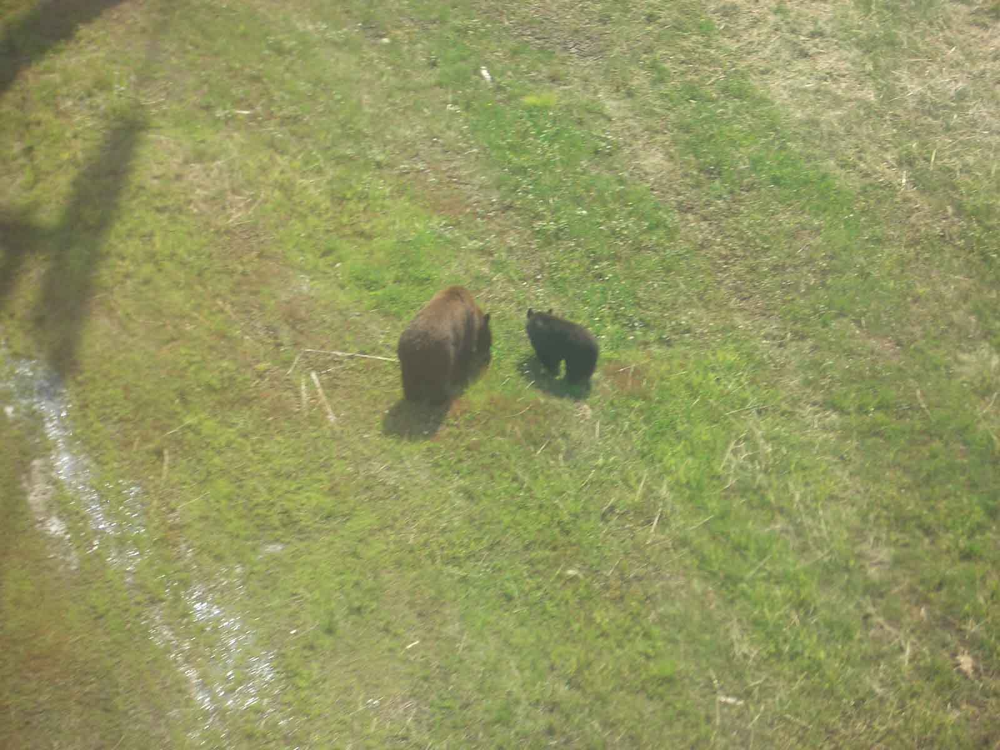

2nd Installment - this time from Canada
Vancouver, Whistler and Victoria, Canada
On the Road again... and it took absolutely ages to get through the border, but eventually we arrived in Vancouver, Canada. What a nice city! And sooooooooo cheap!! Even better than the US!
We took a walk around Gastown, which is the oldest part of the city. It's very pretty with lots of old buildings and shops. We then came across the Vancouver Lookout and took a ride up, fantastic view!
We also found Chinatown, which was not very nice at all, a bit scary to be honest. However we did find the Chinese Garden, which was beautiful. We took a guided tour around the Garden and we both thought we might have to stay for detention...the Lady was like a strict school teacher. If you didn't pay attention or stood in the wrong spot she got rather upset.
We did have a night out in Vancouver, which was good, once we found a bar that actually had some people in it! Maybe we weren't looking in the right part of town. Then we met a guy from Manchester... don't know, you come all this way...
Whilst here we also visited Stanley Park. It has to be one of the most gorgeous parks ever!! It really is beautiful!
Then it was back on the Road again and onto Whistler. We didn't know what to expect because it is a place known for skiing rather than summertime stuff, but we both fell in love with the place! The drive there was really gorgeous, you drive along lakes and mountains and trees, just amazing scenery!! The most beautiful drive yet!!
Whistler and around is just lovely. We stayed just outside of it but still within walking distance. The weather was really hot but it didn't stop us from getting out there and exploring. We took the gondola up the Whistler Mountain and trekked around a bit up there. The views going up and at the top were fantastic. All the surrounding mountains still have snow on them. In fact you can still ski in the Glacier on Blackcome Mountain but only until 1st August, so we missed that. You can, however, take a helicopter ride up there and do some walking around, which we didn't. On the way back down Sharon was saying how nice it would be to see some bears. Lo and behold two minutes later Kerstin spots some bears...honest!! A bear and her two cubs, they were so cute. We were both really excited, hopping around in the gondola like mad people!
Lower down the mountain lots of people (well, young fit people anyway) go Mountain biking. They take the gondola up with their bikes and then come racing down the mountain (crashing sometimes...) It looked just a bit too energetic for us two so we opted for the rafting instead. What they didn't tell us when we booked it is that we had to wear these really sexy (and we mean REALLY sexy) wetsuits with lovely little booties and a life jacket that made us look just sooooooooo lovely! That would have been ok BUT we had to walk from the center across the Square to the Bus. The Square being the place that has lots of people sitting outside restaurants and pubs and just looking at the lovely scenery, i.e. us!! Well, they got an eye-full! And one of us did ask the question: Does my bum look big in this?? Now any of you lot that knows both of us will know who it was that asked that question!!!
The rafting was excellent! Our guide was lovely (nice personality...ok, so he was fit as well!!!) and we had the best time. We started at a lake that was just the most amazing color and then headed to the River. The scenery was gorgeous and yes, we did get absolutely drenched. The water was freezing and there were a few screams coming from our boat! Excellent!!
After all that excitement we took it easy the next day and headed over to the Lost Lake and chilled out. Again, the scenery around the lake is stunning, Mountains in the background, trees surrounding the lake, just beautiful.
And then it was time to leave...
We headed back along the same Road to Horseshoe Bay. This time we stopped at a few places that we missed going up, like the Brandywine Falls. At Horseshoe Bay we got the Ferry over to Vancouver Island. The ride over was great and then it took another while driving before we got to Victoria. This would be Sharon's first experience of staying in a hostel...and it turned out ok! After coming to terms with having to share the bathroom with other people and not having fresh towels every day it wasn't so bad. In fact she knew most of the people within a day or two and was socializing like she had lived there for a while...
Victoria is a lovely little town. It's nice because you can walk all of it without too much hassle, which is basically what we did. The harbour is lovely and there are some nice shops and restaurants.
While we were there we also did a Whaling trip. Again, they forgot to mention the lovely suits we had to wear! At least this time we didn't have to parade ourselves in front of anyone. Mind you, I don't think that anyone would have recognized Kerstin. The suit sort of swallowed her up...it was at least 10 sizes to big! So then we had 3 hours on a small little boat that goes really fast. We were frozen and very wind swept!! It was great fun, shame we didn't actually get to see the whales though!! They decided to go a different route to us so no luck. They did offer us a free ride for the next trip but we were leaving early the next morning so didn't get the chance. We did see some other nice things though, like seals, dolphins, deer and eagles.
Then we had a day to take the car back to Seattle. We took a Ferry to Vancouver and then headed straight down to Seattle. The border on the way back didn't take as long (obviously the Americans are not as fussy about who they let in!), which is just as well because we almost didn't make it in time to drop the car off! The following day we took a flight back to LA. Felt a bit like going home as this is where we started the trip.
We were staying in a motel on Santa Monica Blvd, which we thought would be close to the action in Santa Monica. Well, anyone having been to LA will know that nothing is 'close by'. That evening we took a bus to Santa Monica and arrived an hour and a half later! There was a detour because of some Festival but still we don't think it made that much difference. But it was fun on the bus!! If you want cheap entertainment for $1.25 then get on a bus!!! Anyway, we did get there eventually and took a stroll down 3rd Promenade. It had lots of street entertainment and it had a real buzz about it.
Over the next couple of days we then did the 'typical tourist' thing and visited places like Rodeo Drive in Beverley Hills. It was very posh and very expensive. We even went into Tiffany's but we didn't see anything we liked...Then it was onto Hollywood Blvd and the Walk of Fame and the Mann's Chinese Theatre. It was really cool but maybe not quite what we expected. Hollywood Blvd has some really tacky shops along the way and it doesn't look as glitzy as we thought it would. We also went to Griffith Park and got a bit lost along the way, lets just say we did a LOT of walking that day. But we did find this little path that went up the side of a hill and it had the most amazing view over LA at the top. Sharon was a bit concerned about the rattlesnakes and mountain cats hanging around in this part of the park but she was brave and came along!
And then, all of a sudden, it was time for Sharon to go home. It has gone really quickly!! We really wish we had some more time...but we both had a fantastic time and we did everything we set out to do which was really quite a lot. We managed to cover a lot of ground and got to see some really cool places. And we are still good friends - excellent!! What more could one ask for??!!
For me (Kerstin) it was really nice sharing this trip with someone and it will be kind of strange not having someone around 24/7. Who am I going to bug now??!
That is it for now. Hope you are all well and happy in England. We heard there was a lot of rain...we saw some rain...once...for about1/2 day!
Anyway, lots of Love from Thelma and Louise xxxxxxxxxxxxxxxxxxxxxxxxxxxxxxxxx
We took a walk around Gastown, which is the oldest part of the city. It's very pretty with lots of old buildings and shops. We then came across the Vancouver Lookout and took a ride up, fantastic view!
We also found Chinatown, which was not very nice at all, a bit scary to be honest. However we did find the Chinese Garden, which was beautiful. We took a guided tour around the Garden and we both thought we might have to stay for detention...the Lady was like a strict school teacher. If you didn't pay attention or stood in the wrong spot she got rather upset.
We did have a night out in Vancouver, which was good, once we found a bar that actually had some people in it! Maybe we weren't looking in the right part of town. Then we met a guy from Manchester... don't know, you come all this way...
Whilst here we also visited Stanley Park. It has to be one of the most gorgeous parks ever!! It really is beautiful!
Then it was back on the Road again and onto Whistler. We didn't know what to expect because it is a place known for skiing rather than summertime stuff, but we both fell in love with the place! The drive there was really gorgeous, you drive along lakes and mountains and trees, just amazing scenery!! The most beautiful drive yet!!
Whistler and around is just lovely. We stayed just outside of it but still within walking distance. The weather was really hot but it didn't stop us from getting out there and exploring. We took the gondola up the Whistler Mountain and trekked around a bit up there. The views going up and at the top were fantastic. All the surrounding mountains still have snow on them. In fact you can still ski in the Glacier on Blackcome Mountain but only until 1st August, so we missed that. You can, however, take a helicopter ride up there and do some walking around, which we didn't. On the way back down Sharon was saying how nice it would be to see some bears. Lo and behold two minutes later Kerstin spots some bears...honest!! A bear and her two cubs, they were so cute. We were both really excited, hopping around in the gondola like mad people!
Lower down the mountain lots of people (well, young fit people anyway) go Mountain biking. They take the gondola up with their bikes and then come racing down the mountain (crashing sometimes...) It looked just a bit too energetic for us two so we opted for the rafting instead. What they didn't tell us when we booked it is that we had to wear these really sexy (and we mean REALLY sexy) wetsuits with lovely little booties and a life jacket that made us look just sooooooooo lovely! That would have been ok BUT we had to walk from the center across the Square to the Bus. The Square being the place that has lots of people sitting outside restaurants and pubs and just looking at the lovely scenery, i.e. us!! Well, they got an eye-full! And one of us did ask the question: Does my bum look big in this?? Now any of you lot that knows both of us will know who it was that asked that question!!!
The rafting was excellent! Our guide was lovely (nice personality...ok, so he was fit as well!!!) and we had the best time. We started at a lake that was just the most amazing color and then headed to the River. The scenery was gorgeous and yes, we did get absolutely drenched. The water was freezing and there were a few screams coming from our boat! Excellent!!
After all that excitement we took it easy the next day and headed over to the Lost Lake and chilled out. Again, the scenery around the lake is stunning, Mountains in the background, trees surrounding the lake, just beautiful.
And then it was time to leave...
We headed back along the same Road to Horseshoe Bay. This time we stopped at a few places that we missed going up, like the Brandywine Falls. At Horseshoe Bay we got the Ferry over to Vancouver Island. The ride over was great and then it took another while driving before we got to Victoria. This would be Sharon's first experience of staying in a hostel...and it turned out ok! After coming to terms with having to share the bathroom with other people and not having fresh towels every day it wasn't so bad. In fact she knew most of the people within a day or two and was socializing like she had lived there for a while...
Victoria is a lovely little town. It's nice because you can walk all of it without too much hassle, which is basically what we did. The harbour is lovely and there are some nice shops and restaurants.
While we were there we also did a Whaling trip. Again, they forgot to mention the lovely suits we had to wear! At least this time we didn't have to parade ourselves in front of anyone. Mind you, I don't think that anyone would have recognized Kerstin. The suit sort of swallowed her up...it was at least 10 sizes to big! So then we had 3 hours on a small little boat that goes really fast. We were frozen and very wind swept!! It was great fun, shame we didn't actually get to see the whales though!! They decided to go a different route to us so no luck. They did offer us a free ride for the next trip but we were leaving early the next morning so didn't get the chance. We did see some other nice things though, like seals, dolphins, deer and eagles.
Then we had a day to take the car back to Seattle. We took a Ferry to Vancouver and then headed straight down to Seattle. The border on the way back didn't take as long (obviously the Americans are not as fussy about who they let in!), which is just as well because we almost didn't make it in time to drop the car off! The following day we took a flight back to LA. Felt a bit like going home as this is where we started the trip.
We were staying in a motel on Santa Monica Blvd, which we thought would be close to the action in Santa Monica. Well, anyone having been to LA will know that nothing is 'close by'. That evening we took a bus to Santa Monica and arrived an hour and a half later! There was a detour because of some Festival but still we don't think it made that much difference. But it was fun on the bus!! If you want cheap entertainment for $1.25 then get on a bus!!! Anyway, we did get there eventually and took a stroll down 3rd Promenade. It had lots of street entertainment and it had a real buzz about it.
Over the next couple of days we then did the 'typical tourist' thing and visited places like Rodeo Drive in Beverley Hills. It was very posh and very expensive. We even went into Tiffany's but we didn't see anything we liked...Then it was onto Hollywood Blvd and the Walk of Fame and the Mann's Chinese Theatre. It was really cool but maybe not quite what we expected. Hollywood Blvd has some really tacky shops along the way and it doesn't look as glitzy as we thought it would. We also went to Griffith Park and got a bit lost along the way, lets just say we did a LOT of walking that day. But we did find this little path that went up the side of a hill and it had the most amazing view over LA at the top. Sharon was a bit concerned about the rattlesnakes and mountain cats hanging around in this part of the park but she was brave and came along!
And then, all of a sudden, it was time for Sharon to go home. It has gone really quickly!! We really wish we had some more time...but we both had a fantastic time and we did everything we set out to do which was really quite a lot. We managed to cover a lot of ground and got to see some really cool places. And we are still good friends - excellent!! What more could one ask for??!!
For me (Kerstin) it was really nice sharing this trip with someone and it will be kind of strange not having someone around 24/7. Who am I going to bug now??!
That is it for now. Hope you are all well and happy in England. We heard there was a lot of rain...we saw some rain...once...for about1/2 day!
Anyway, lots of Love from Thelma and Louise xxxxxxxxxxxxxxxxxxxxxxxxxxxxxxxxx

View from Whistler Mountain

Kerstin where she belongs .... in Alcatraz!

Sharon felt left out so she joined in too!

Vancouver

Sharon getting friendly with a 'local\

A Brown Bear with her cub

Brandywine Falls

Kerstin in her very sexy whaling outfit

Kerstin at Mann's Chinese Theatre doing the 'Touristy Thing\